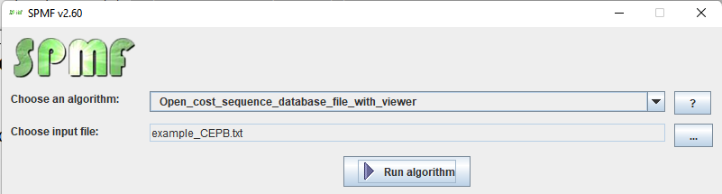
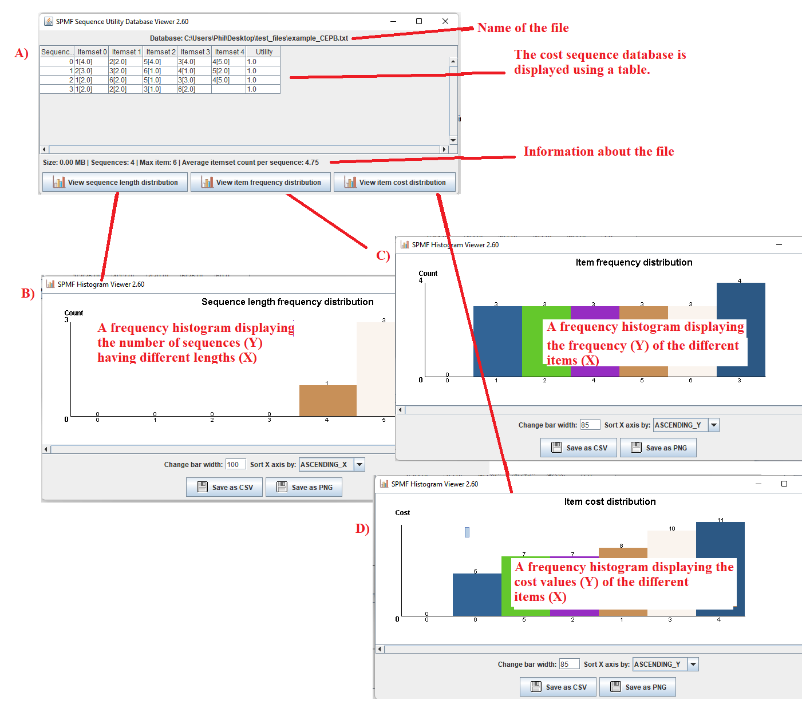

View a binary cost sequence database file with the Cost Sequence Database Viewer (SPMF documentation)
Sequence databases with cost information and binary utility are a type of data taken as input by data mining algorithms offered in SPMF such as CEPB and CorCEPB .
SPMF offers a tool to view the content of a sequence database with cost information and binary utility. This tool is called the SPMF Cost Sequence Database Viewer.
This page explains how to use this tool with an example.
How to run this example?
If you want to run this example from the graphical interface of SPMF, (1) choose the algorithm "Open_sequence_database_cost_binary_utility_file_with_viewer", (2) choose the example_CEPB.txt file as input, and then (3) click "run algorithm" .

- If you want to run this example from the source code of SPMF, run the file MainTestSequenceCostUtilityBinaryViewer, which is located in the package ca.pfv.spmf.tests
- If you want to execute this example from the command line interface of SPMF, then execute this command:
java -jar spmf.jar run Open_sequence_database_cost_binary_utility_file_with_viewer example_CEPB.txt
in a folder containing spmf.jar and the file example_CEPB.txt which is included with SPMF.
What is displayed?
After running the example, the content of the file will be displayed by the tool. The picture below shows the user interface of this viewer.
The window A) show in the picture below is the main window. It displays the cost sequence database using a table. The table has four rows in this example. Each row is a sequence from the sequence database.
Take the first row as example.
The cell in the first column of the first row indicates that the ID of this sequence is 0.
The cell in the second column indicates that the first itemset of that sequence contains the item 1 with a cost value of 4.
The cell in the third column indicates that the second itemset of that sequence contains the item 2 with a cost value of 2.
The fourth cell in that row indicates that the third itemset contains the item 5 with a cost value of 4.
The fifth cell in that row indicates that the fourth itemset contains the item 3 with a cost value of 4.
The sixth cell in that row indicates that the fifth itemset contains the item 4 with a cost value of 5.
Lastly, the last column indicates that the utility of this whole sequence. This utility value is binary. Here it is positive (one) rather than negative (zero).
The other sequences follow the same format.
This view as a table can be useful to understand the content of a cost sequence database file.
Besides, there are three buttons that provides additional features:
- By clicking on the button "View sequence length distribution ", a new window is opened, presented as window B) in the picture below. This window displays the frequency histogram of the different sequence lengths in the current file. The number of sequences is the Y axis and the different sequence lengths are the X axis. There are some buttons in this window to export the data from the frequency histogram as a CSV file so that it can be imported in other software (e.g. Excel), or as a picture. Besides some options are provided to adjust the bar width and the order in which the X axis is sorted.
- By clicking on the button "View item frequency distribution ", a new window is opened, presented as window C) in the picture below. This window displays the frequency of the different items in the current file. The different items are displayed on the X axis and their frequency (support or number of occurrences) are presented on the Y axis. There are some buttons in this window to export the data from the frequency histogram as a CSV file so that it can be imported in other software (e.g. Excel), or as a picture. Besides some options are provided to adjust the bar width and the order in which the X axis is sorted.
- By clicking on the button "View item cost distribution ", a new window is opened, presented as window D) in the picture below. This window displays the cost values of the different items in the current file. The different items are presented on the X axis and their cost values are displayed on the Y axis. There are some buttons in this window to export the data from the frequency histogram as a CSV file so that it can be imported in other software (e.g. Excel), or as a picture. Besides some options are provided to adjust the bar width and the order in which the X axis is sorted.

What is the input?
The algorithm takes as input a cost-event sequence database with binary utility, as used by algorithm such CEPB.
The database used in this example is provided in the text file "example_CEPB.txt" in the package ca.pfv.spmf.tests of the SPMF distribution, which follows the file format for CEPB.
In that format, a sequence database contains multiple sequences, and each sequence is an ordered list of events, each event has a cost value (a positive integer), and each sequence has a utility value ( a binary value where 1 indicates a positive outcome and 0 indicates a negative outcomet).
The file example_CEPB.txt contains the following content:
1[4] -1 2[2] -1 5[4] -1 3[4] -1 4[5] -1 -2 SUtility:1
2[3] -1 3[2] -1 6[1] -1 4[1] -1 5[2] -1 -2 SUtility:1
1[2] -1 6[2] -1 5[1] -1 3[3] -1 4[5] -1 -2 SUtility:1
1[2] -1 2[2] -1 3[1] -1 6[2] -1 -2 SUtility:1
This database contains four lines. Each line is a sequence.
Moreover, each sequence (line) is an ordered list of events separated by -1.
An event is represented by a positive integer and it is followed by a cost value (e.g. spent time on the event) indicated between squared brackets [ ].
The end of a sequence is indicated by -2. Finally, at the end of each line, the keyword "SUtility:" is followed by 0 or 1, which respectively represent a negative or positive outcome.
For example, the first line indicates that event "1" had a cost of 4, was followed by event "2" with a cost of 2, followed by event "5" with a cost of 4, followed by event "3" with a cost of 4, and followed by event "4", with a cost of 5. Moreover, this sequence has a utility of 1, which means a positive outcome. The other sequences follow the same format.
This database could for example represents sequences of learning activities made by learners, where the events 1,2,3,4 and 5 are learning activities, cost values are the time spent on a learning activity and the utility is to pass or faill an exam